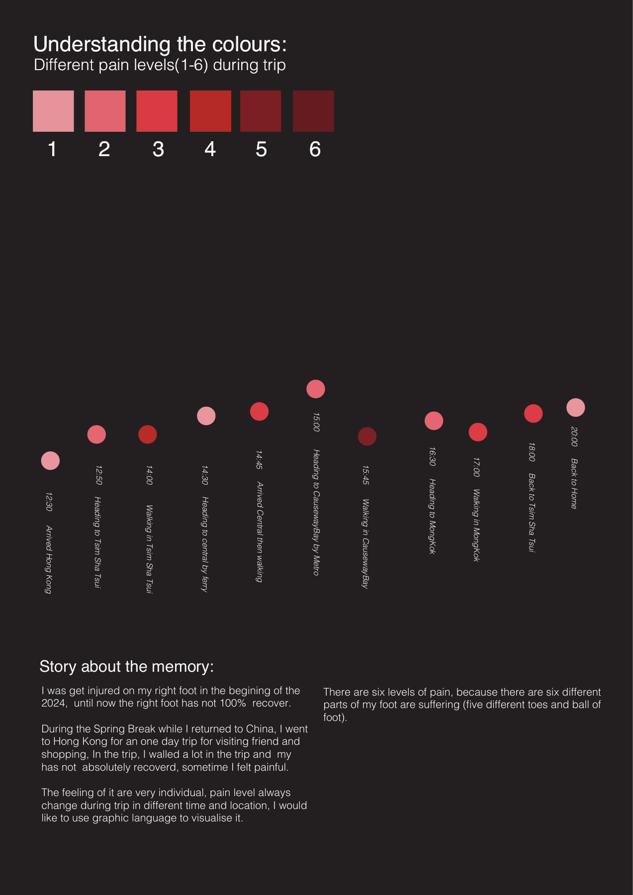

同一套信息，在两个视角中保持一致
项目体现了我对叙事结构、视觉规则与系列一致性的组织能力：以同一套色彩、标记与注释连接两幅海报，并通过不同构图分别支持顺序阅读与空间定位。
- 概念组织
- 视觉编码
- 信息层级
- 系列一致性

香港一日行程，时间与体感的双重记忆。
将时间、地点与主观体感，
转化为可阅读、可对照的视觉叙事。


项目以一次香港一日行程的个人回忆为素材。我将时间、地点与主观体感变化整理为两幅信息海报，探索个体体验如何通过图形语言被理解。
设计重点是为主观感受建立清晰的阅读结构。通过六级色彩图例与统一的圆形标记，我将同一段行程分别放入时间顺序和地理背景，让读者在两个视角中对照理解。
项目体现了我对叙事结构、视觉规则与系列一致性的组织能力：以同一套色彩、标记与注释连接两幅海报，并通过不同构图分别支持顺序阅读与空间定位。
从行程回忆中整理时间节点、地点与个人体感，将叙事内容拆解为可标注的信息，为两幅海报建立共同基础。
以由浅到深的六级色彩表达个人体感差异，并保留数字图例。统一圆形标记承载色彩，使节点与说明能够相互对应。
第一幅海报沿行程先后展开节点，通过时间、地点文字与色彩标记形成阅读节奏，呈现一天中体验的变化。
第二幅海报将同一组节点置于香港地理背景中，让时间信息与地点位置相互补充；两幅作品使用一致图例，保持系列识别。
两幅海报完整展示。点击图片，可放大查看节点注释与色彩图例。